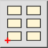

- Valitse lohko, jonka haluat lisätä, lohkoluettelosta.
- Napsauta Lisää-painiketta tai valitse valikosta „Lisää lohko".
- Syötä kiertokulma ja mittakaavakerroin lohkoviitteelle
asetustyökalupalkkiin.
- Määritä lisätyn lohkon sijainti napsauttamalla koordinaattia tai
syöttämällä koordinaatti konsoliin.
- Luodaksesi kokonaisen lohkotaulukon, napsauta taulukko-painiketta asetustyökalupalkissa:

Syötä sarakkeet, rivit, sarakeväli ja riviväli näytetyssä valintaikkunassa.
Näitä ominaisuuksia voidaan muokata myöhemmin myös ominaisuuseditorilla.